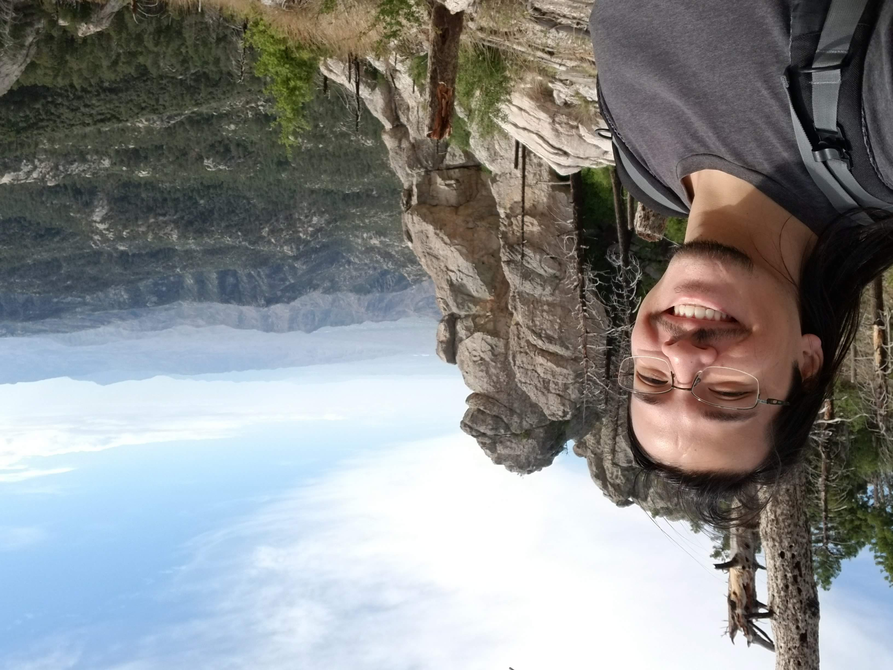
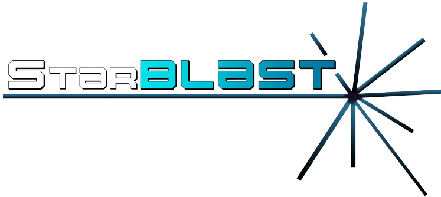

Cosi Michele, Science Analyst
Announcement
CyVerse is currently looking for a Data Scientist. We are an interdisciplinary team spanning the fields of data science, life science, and cyberinfrastructure. Join and help create, manage, and support collaborative projects among CyVerse, UArizona Data Science Institute, and external research communities. This includes working with scientists and their research communities, researching appropriate supporting technologies, and developing learning and training materials for advancing scientific discoveries.
For more information, visit the official job posting: https://arizona.csod.com/ux/ats/careersite/4/home/requisition/8763?c=arizona
About me

I am a Science Analyst for CyVerse at the University of Arizona, offering support for scientists interested in using the tools provided by CyVerse. My research interests are in genomics and phenomics, with a focus on workflow development, automation and data extraction.
Education
- University of Arizona, MS, Plant Sciences, 2021
- Nagoya University, MS, Agriculture, 2019
- Nagoya University, BS, Applied Biosciences, 2017
Research and Work
PhytoOracle
During my time as a graduate student at the University of Arizona, I had the opportunity to assist the PhytoOracle project.
- PhytoOracle is a scalable, distrubted workflow manager developed for analysis of high throughput phenotype data, designed (but not limited!) for processing data from the University of Arizona Gantry (the World's largest agricultural robot).
- Contributions include:
- Building workflows using the CCTools foreman-worker framework.
- Large scale phenotype extraction.
- Big Data management and processing.
- Learn more on PhytoOracle:
- North American Plant Phenotyping Network (NAPPN 2022) conference article.
- Find out what the Wall Street Journal had to say about PhytoOracle: WSJ article.
- Watch PhytoOracle on YouTube.
- Documentation and repository:
StarBLAST

Primary maintainer and developer of StarBLAST.
- StarBLAST is a scalable extension of SequenceServer BLAST, making BLAST accessible to educators and researchers running classroom-scale searches concurrently. The idea first originated when long queue times would disrupt lectures based on the BLAST software, turning educators to look for a solution. StarBLAST was created with this in mind: making BLAST accessible to all levels and sizes of classrooms.
- Learn more on StarBLAST:
- Official scientific publication at Journal of Open Source Education (JOSE): https://jose.theoj.org/papers/10.21105/jose.00102
- Read the concepts behind StarBLAST on Medium).
- Documentation and repository:
Conferences, Presentations & Webinars
Selected presentations and webinars:
- Agricultural Genome to Phenome Initialtive (AG2PI) Field Day
- PhytoOracle - A Workflow Manager for Phenomic Data Processing
- Phenome 2020
Contact me
- 📪 Mail: cosi-at-arizona-dot-edu
- 🐈⬛ GitHub: https://github.com/CosiMichele
- 🔬 OrcID: 0000-0001-7609-1939
- 🐦 Twitter: https://twitter.com/cosi_michele